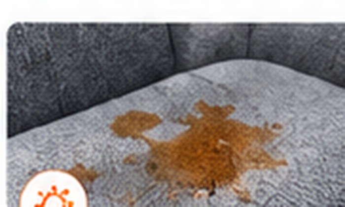

Identify the symptom, understand likely causes, and find the most useful repair, cleaning or protection path.

Use this simple three-step path.
Choose the problem that most closely matches what you see, feel or smell.
Understand the cause, risk, DIY path and when to call a pro.
Only buy tools or materials that fit the actual problem.